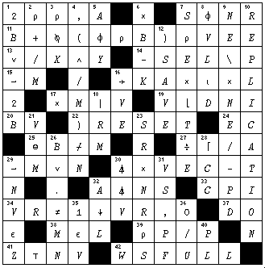
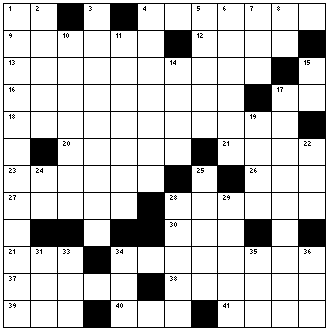

Zark News: Utility Corner and Crossword-4
Vector 15:2, page 36
Note:
The clues for the new crossword contain some APL characters. These are coded as APL2741 (available as a 45K download), and also with <CODE> tags. The mapping is compatible with both the APL2000 font and the current Dyalog font.
Solution to APL Crossword from 15.1¶

Crossword from 15.2¶

Across
1. Reverse the elements in the vector L
4. Delete from the vector N the even numbers 2 to 100
9. Scale up the numbers in the matrix M by 100000, and return as a vector
12. Fifty-five fives
13. The sum of the absolute value of the vector NV summed with the magnitudes of the first R elements of V
16. The N by N identity matrix (1s on the diagonal)
17. Get outta here!
18. Flag the rows of the 15-column character matrix CMI that match the first fifteen elements of CV
20. A random positive integer no more than 20 bigger than A
21. The amount to subtract from T to make it the next higher integer
23. Given N, a vector of integers, map all values from 1 to 7 to the numbers 0 to 6
26. Find the first four in F fast
27. What’s currently localized?
28. Transform the matrix of scores S from students by exams, to exams by students and cap the scores at 100
30. (N+1)-⍳N, without using ⌽
31. Squeeze all 0s from the vector V
34. (⍴M)⍴(1↓⍴M)/V for the matrix M and the vector V
37. E (bits) if the vector N is empty, otherwise (⍴E)⍴1
38. Divide each row of NM by the vector E, where S←⍴NM
39. Repeat each column of M, C times
40. (⍴M)⍴(0), for character M
41. 3⌽2/2⍴'ICE CREAM'
Down
1. 2-(⍴VEC⍳n[⌽⍳C] in origin 1
2. Convert the bit vector LE, having length M, to the designated indices
3. Flag those values of A that are contained in the matrix NT and for which the corresponding values in the non-negative integer array N are nonzero
4. How many 27s are there in each row of the matrix NM?
5. 1 2 3 4 5, five times
6. From the first N values in T, flag those that aren’t multiples of five
7. The indices of the vector V
8. 1⊥⍳10
10. Generate NI ( a multiple of 5) random numbers between 0 and 4, having the same frequency of each value
11. (V[1]+⍳L),(V[2]+⍳L),(V[3]+⍳L), ...
14. Which elements in R are 10s?
15. +/⍳4
17. Branch to the line labelled V if I is a scalar
19. -F1-C
22. ⍎⍞←'T',0⍴T←40
24. Change the sign of S
25. A random index into the vector S, up to the index at which the shape of M is found
28. Transpose the matrix NM along the MINOR diagonal
29. The number of whole multiples of C in NM
32. None
33. (⍴M)⍴0, for numeric M
34. Transform NM from shape (6 3 4) to shape (4 3 6)
35. Unfinished business
36. If MAT were demoted
Reprinted with kind permission from Zark APL Tutor News, a quarterly publication of Zark Incorporated, 23 Ketchbrook Lane, Ellington, CT06029, USA